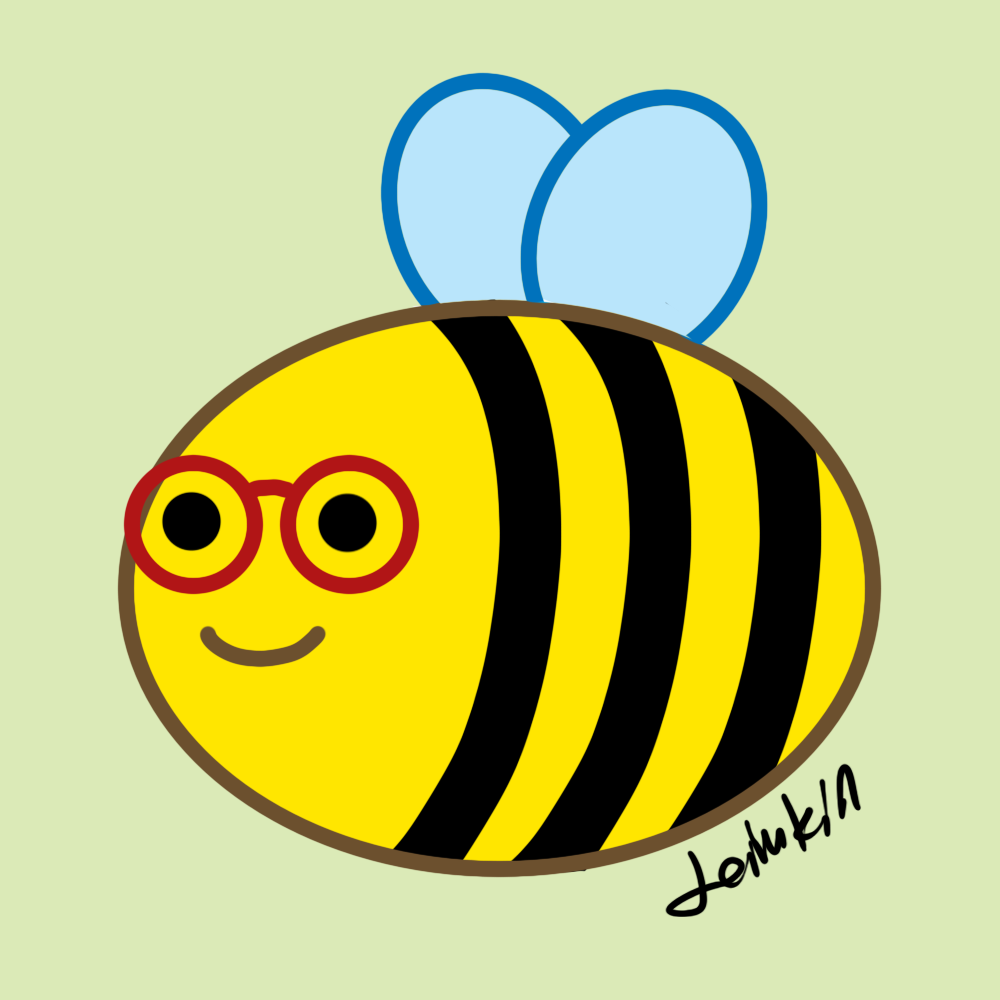

About
The Site
This website serves as a personal hub for my interests and my own corner on the internet outside social media platforms.
On this site, you can find various stuff and resources I have created or compiled, as well as articles dedicated to my interests.
Feel free to drop a message and say hi on my guestbook!
You can link to my website with this button:

If you also have a Neocities account, you can follow this site through its Neocities profile.

The Site Owner
You can call me Leilukin. I am a Malaysian Chinese non-binary lesbian born in the early 90s. My pronouns are they/she/他/她.
This website serves as a personal hub for gathering various stuff and resources I have created or compiled.
I speak Mandarin, English, Cantonese and Malay, though I am most fluent in Mandarin and English.
Social media platforms you can find me on:
Tumblr |
YouTube |
Twitter |
Mastodon |
Mastodon (for gaming) |
Instagram
However, I am most active on Tumblr, so if you want to interact with me on a social media platform, Tumblr would be the best option.
I also have media catalogues online on the following platforms:
Steam |
Backloggd |
Goodreads |
The StoryGraph |
Letterboxd |
Serializd
You can contact me via email: leilukin@outlook.com.
If you enjoy my work, you can support me on Ko-Fi or Buy Me a Coffee: